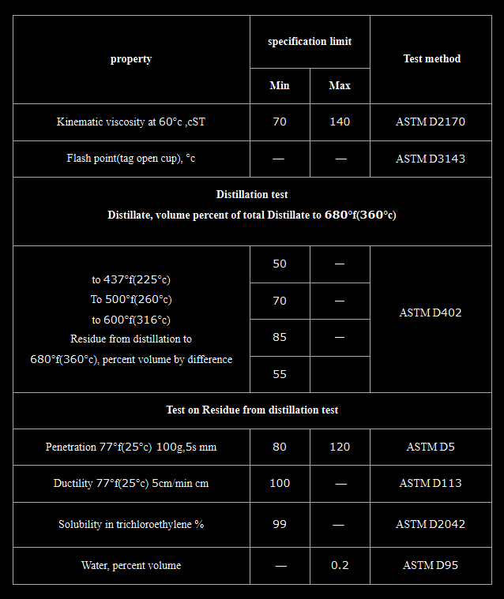

Cutback Bitumen RC‑70 – General Description │ Iran Bitumen Supply Int │ IBSI
Cutback Bitumen RC‑70 is a rapid‑curing cutback asphalt produced by blending high‑quality penetration‑grade bitumen with highly volatile petroleum solvents such as gasoline or naphtha. These solvents reduce the viscosity of the bitumen, allowing it to be applied at ambient temperatures without heating. Once applied, the solvent evaporates quickly, enabling the bitumen to regain its original hardness and perform as a durable binder within the pavement structure. Rapid‑curing cutbacks like RC‑70 are formulated for applications requiring fast setting, strong adhesion, and efficient coating of aggregates. Specifications allow up to 45% distillate content, giving RC‑70 its characteristic rapid evaporation rate. This makes it ideal for tack coats, prime coats, and surface treatments where quick curing is essential. At Iran Bitumen Supply Int │ IBSI, our RC‑70 is manufactured from premium vacuum residue feedstock and blended with carefully selected volatile solvents to ensure consistent curing behavior. It fully complies with ASTM D2028 standards for rapid‑curing cutback petroleum asphalts. The thermoplastic nature of the base bitumen ensures predictable performance across varying temperatures, softening when heated and hardening as it cools.
Understanding How RC‑70 Works
Cutback asphalt is produced by adding volatile solvents to bitumen to make it liquid at ambient temperatures. In RC‑70, gasoline or naphtha is used as the primary cutter, resulting in a binder that cures rapidly once applied. This temporary reduction in viscosity allows the bitumen to coat aggregates efficiently, penetrate granular surfaces, and form a strong adhesive layer. As the solvent evaporates, the bitumen returns to its original viscosity and hardness. Proper evaporation is essential to avoid long‑term softening of the pavement. When formulated correctly, RC‑70 provides excellent adhesion, durability, and long‑term performance in demanding construction environments.
Applications of Cutback Bitumen RC‑70
Cutback Bitumen RC‑70 is widely used in road construction and maintenance, particularly in tack coats, prime coats, and cold‑applied asphalt mixes. Its rapid curing properties make it ideal for preparing asphalt or granular surfaces before applying hot mix asphalt. RC‑70 penetrates deeply into the surface, stabilizes loose particles, and creates a strong, waterproof foundation for the final pavement layer. RC‑70 is also used in patching materials, stockpile mixes, and surface treatments where fast setting and strong adhesion are required. It is commonly applied using truck‑mounted spray equipment, ensuring uniform coverage and efficient application. Because RC‑70 does not require heating, it is especially valuable in remote locations, small‑scale projects, and situations where heating equipment is not available.
Packing Options for Cutback Bitumen RC‑70
At Iran Bitumen Supply Int │ IBSI, RC‑70 is supplied in packaging formats designed for safe handling and efficient transport. It is available in bulk tankers for large‑scale projects and in new thick steel drums placed on pallets to prevent leakage during containerized shipping. These packaging options ensure that the product arrives in optimal condition and is ready for immediate use.
Safety Guidelines for Handling RC‑70
RC‑70 contains highly volatile solvents and must be handled with care. It should be transported, stored, and applied at the lowest practical temperature. All ignition sources must be eliminated during use due to the flammable nature of the solvents. Direct inhalation of vapors and skin contact should be avoided, and appropriate personal protective equipment must be worn at all times. The product and any washings must never be allowed to enter stormwater or sewer systems.

Specification of cutback bitumen RC-70